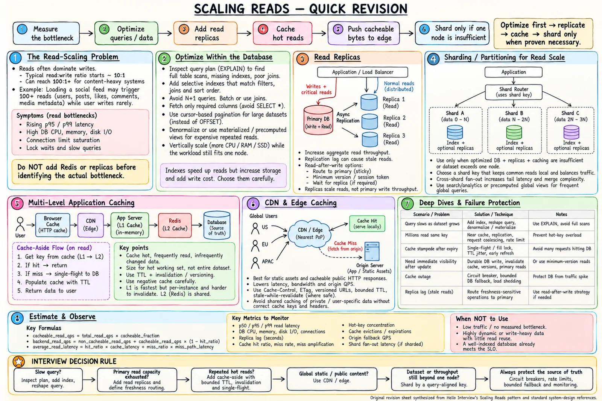

Topic · Scaling Reads
Scaling Reads: Diagnose and Design
Don't start with Redis, replicas, or sharding. Find the saturated resource, check the freshness budget, then add the smallest mechanism that removes the bottleneck.


Quick Revision
- Measure p50/p95/p99, query time, CPU, memory, I/O, buffer hit ratio, lock waits, pool saturation, per-key traffic.
- Make one DB efficient:
EXPLAIN, indexes, no N+1, cursor pagination, denormalize, materialized views, bigger box. - Replicas multiply read capacity, not write capacity - plan lag, read-after-write, failover.
- Cache repeated expensive reads; cache-aside by default with key, TTL, invalidation, outage path.
- CDN/edge for globally cacheable bytes.
- Shard only when one optimized node + replicas can't hold storage or throughput.
- Protect the origin: single-flight, jitter, bounded fallback, breakers, shedding, warm-up.
The problem
Reads grow faster than writes - often 10:1 to 100:1+. One feed request may fetch profiles, posts, media, reactions, and comments. A single database eventually hits CPU, memory, disk, network, or concurrency limits.
Read scaling reduces: reads reaching the origin work per origin read bytes per read distance from data to reader contention among concurrent reads
Diagnose before choosing
client → DNS/CDN → LB/gateway → app → L1/L2 cache → DB/search/read model → serialization
| Signal | Likely cause | Next check |
|---|---|---|
| High DB CPU | Expensive query, bad plan, too much concurrency | EXPLAIN ANALYZE, rows scanned vs returned |
| High disk I/O, low buffer hit | Working set doesn't fit, large scans | Indexes, RAM, bloat, locality |
| Low DB CPU, high latency | Lock waits, pool queue, network | Wait events, pool saturation, tracing |
| High app CPU | Serialization, hydration, logic | Profile app; DB cache won't help |
| High hit ratio, poor latency | Large values, hot shard, downstream work | Byte hit ratio, per-key latency |
| One key dominates | Hot key | Per-key QPS, coalescing, replication |
| Latency grows with data | Scans, sorts, deep pagination | Plan, selectivity, keyset pagination |
Say: "First I'll establish whether it's query cost, DB capacity, repeated work, distance, or a hot key - then pick the smallest fix."
Clarifying questions
| Ask | Example answer | Decision |
|---|---|---|
| Which endpoint is slow? | Product details, feed | Optimize those paths only |
| Read:write ratio? | 100:1 | Replicas/caches pay off |
| Peak and burst? | 50K steady, 200K campaigns | Size for peak; protect origin |
| Staleness allowed? | Metadata 1 min, price 5 s, inventory none at checkout | Per-field TTLs; validate at source |
| Read-after-write? | Own profile edits | Session token or primary routing |
| Public or personalized? | Catalog public, recs personal | CDN public; user-scoped keys |
| Global users? | Yes | Regional services + CDN |
| Point lookups or global queries? | Mostly by ID; some trending | Point path + precomputed view |
| Working set? | 5% of items → 85% of reads | Cache the hot set only |
| Hot keys? | Flash sale 10K× normal | Edge, replicated entries, single-flight |
| One DB enough? | Yes after indexes + replicas | Don't shard yet |
| Cache/CDN fails? | Slower OK, DB overload not | Bounded fallback, breaker, shedding |
Estimation
avg QPS = DAU × reads/user ÷ 86,400
10M × 20 = 200M/day → ~2,315 avg → ×10 ≈ 23K peak
CDN origin = total × (1 - eligible × hit)
1 - 0.5 × 0.9 = 55% reaches origin
cache backend = Q × (1 - cacheable) + Q × cacheable × (1 - hit)
12K × 0.2 + 12K × 0.8 × 0.05 = 2,880 QPS
latency ≈ hit × hit_latency + miss × miss_latency (track p99 separately)
replicas = ceil(peak eligible QPS × skew/headroom ÷ safe QPS per replica)
memory = hot keys × entry size × RF × overhead ÷ utilization
20M × 1.5 KB = 30 GB → × 2 × 1.3 ÷ 0.7 ≈ 111 GB
- Indexed DB meets peak? Stop there.
- Primary read-bound, staleness OK? Add replicas.
- Repeated keys dominate? Cache - usually more offload per dollar than replicas.
- Public, global bytes? CDN.
- Still over one node? Shard by the common access key.
Read architecture
Clients → GeoDNS/Anycast → CDN/edge → regional LB/gateway
→ stateless read service → L1 → L2 → read router
→ replicas (stale-tolerant) | primary (fresh) | search/read model (global)
Write service → primary → outbox/CDC → invalidate L2/L1, purge CDN, update views
- Edge hit → return; miss → read service.
- L1 hit → return; miss → L2.
- L2 hit → fill L1, return; miss → single-flight by key.
- Route to replica or primary by freshness token.
- Fill L2/L1 with TTL + version; edge caches if public.
Global queries: search/read model → top-K IDs → batch-hydrate from cache → bounded origin fetch → cursor. Never hit every shard per request.
| Layer | Removes | New risk |
|---|---|---|
| Index/query tuning | Work per query | Write/storage overhead |
| Read replica | Primary read load | Lag, routing, failover |
| L1/L2 cache | Repeated reads | Staleness, invalidation, outage |
| CDN/edge | Distance, origin bandwidth | Privacy, variation, purge |
| Precomputed view/search | Expensive joins/aggregates | Projection lag, rebuilds |
| Sharding | Single-node limits | Routing, fan-out, resharding |
Interview practice
Answer aloud, then reveal.
Moody's (Jul 2026): read-heavy inventory and pricing service; Redis fully down; hundreds request the same product.
Authoritative transactional store; Redis cache-aside, L1 for extreme hot keys; single-flight so one miss fetches. Redis down → breaker + bounded DB fallback. Validate inventory at checkout.
Walmart SSE (Apr 2026): e-commerce under flash-sale surges.
Split browse reads from inventory writes. CDN + Redis for catalog, pre-warm sale items, replicate hot entries, single-flight, rate limits, admission control. Inventory = atomic conditional update.
Atlassian P50 (Jun 2025): show each author's friend count next to every post at massive scale.
Denormalized friend_count updated atomically or via idempotent events; cache user summary; batch-hydrate unique authors per page; reconcile periodically.
InMobi SDE-2 (Jul 2024): a trending tweet creates a DB hotspot.
Cache tweet + CDN media, replicate the cache entry, coalesce misses, rate-limit. More shards don't split one hot key.
Scale a profile API from 1K to 1M reads/s.
Indexed DB + stateless services → measure → replicas → Redis → L1 for hot keys → CDN for public views → origin protection → shard by user_id only if needed.
Cache or replica first?
Replica when many different reads exhaust the primary and staleness is OK; cache when the same data repeats or is expensive. Complementary.
When should you not cache?
Low traffic, low reuse, data changes faster than reused, strict freshness costs more than the read, or the DB already meets the target.